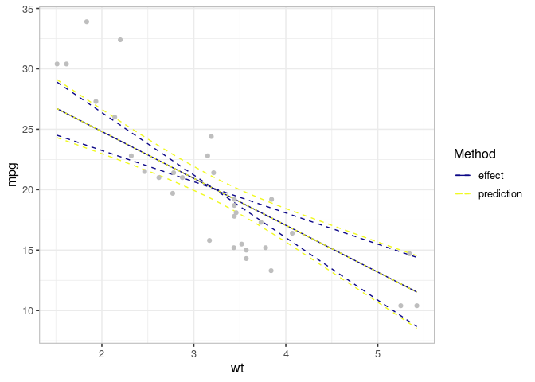

The development of this package is motivated by the water, sanitation, and hygiene (WaSH) data in which we were interested in investigating the contribution of demographic and socio-economic factors to improved WaSH indicators among the slum dwellers in Nairobi, Kenya. We noticed that the predictions we generated using the existing packages consistently over- or under- estimated the observed proportions; and did not align well with the observed data points. In other words, what we call . There are several (challenges) reasons for this, including:
- the choice of the
- uncertainty estimation – the choice of for computing confidence intervals
- biases induced by non-linear averaging due to non-linear transformation in generalized linear models
It implements two approaches for constructing outcome plots (prediction and effect plots). These include:
- mean-based approach
- observed-value approach
It can also be used to generate bias-corrected prediction and effect estimates for generalized linear models involving non-linear link functions, including models with random effects. This package complements the existing ones by providing:
- a straightforward way to generate effects plots
- a robust way to correct for non-linear averaging bias in generalized (mixed) models
Installation
You can install the development version of varpred from GitHub with:
Example
We use mtcars data to show outcome plots:
-
isolate=TRUEto generate effect plot -
isolate=FALSEto generate prediction plot
library(varpred)
library(ggplot2)
## Set theme for plots
varpredtheme()
## Fit the model
mod <- lm(mpg ~ wt + hp, mtcars)
## Effect
ef <- varpred(mod, "wt", isolate=TRUE, modelname="effect")
plot(ef)## Prediction
pred <- varpred(mod, "wt", isolate=FALSE, modelname="prediction")
print(plot(pred)
+ scale_color_brewer(palette = "Dark2")
)
## Compare effect and prediction
all_v <- combinevarpred(list(ef, pred))
p1 <- plot(all_v)
## Add observed data
print(p1
+ geom_point(data=mtcars, aes(x=wt, y=mpg), col="grey")
+ labs(colour="Method", linetype="Method")
+ scale_color_brewer(palette = "Dark2")
)